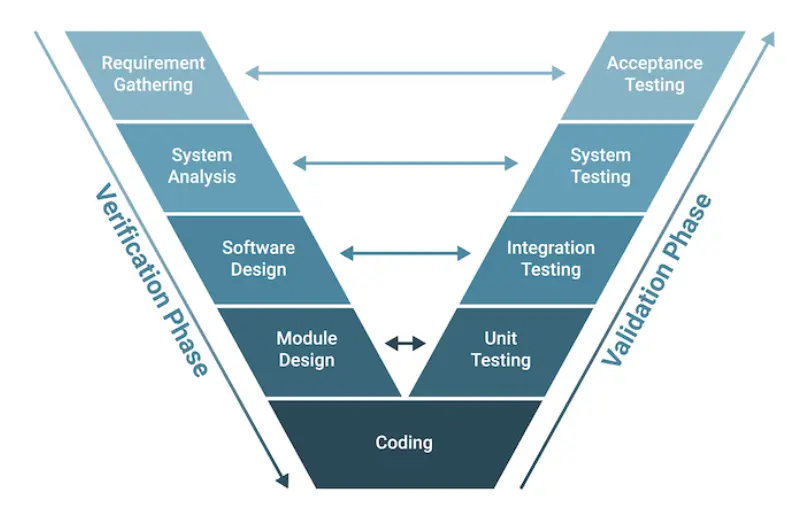

V-Shape Development
V-Shape development was a popular approach to software development in the 1990s and early 2000s. It is a linear, sequential process that emphasizes the importance of testing and validation at each stage of development. The V-Shape model is often depicted as a V-shaped diagram, with the left side representing the development phases and the right side representing the testing phases.

The 9 Phases
| # | Phase | Description |
|---|---|---|
| 1 | Requirements | Gather and analyze requirements - functional and non-functional |
| 2 | System Analysis | Identify components, interactions, and high-level architecture |
| 3 | Software Design | Create detailed design documents and component interfaces |
| 4 | Module Design | Define data structures, algorithms, and function signatures |
| 5 | Coding | Write the actual code based on design documents |
| 6 | Unit Testing | Test individual modules with pytest and Vitest |
| 7 | Integration Testing | Test module interactions with TestClient |
| 8 | System Testing | End-to-end testing with Playwright |
| 9 | Acceptance | Demo to user and confirm against criteria |
The V-Shape model emphasizes the importance of testing and validation at each stage. This ensures high-quality software that meets user needs. However, it can be rigid and may not suit projects requiring rapid iteration.
AI Orchestration
With the rise of AI in software development, I believe the V-Shape model now serves well as an orchestration format for AI engineering projects:
- Left side of V: Development and training phases of the AI model
- Right side of V: Testing and validation phases
This structured approach ensures AI models are developed systematically, with rigorous testing at each stage.
Note: I built a series of commands that allow seamless progression through each stage. Find the repo here.
Stage Commands
Each command corresponds to a phase in the V-Shape model.
Stage 1 — Requirements
Description: V-model phase 1 — Requirements
Write down what the feature does, who uses it, inputs/outputs, acceptance criteria. Confirm with the user before moving on.
- Artifact:
docs/features/<feature-slug>/01-requirements.md- For new applications: project scaffolding (uv init, Vite create, Postgres + Alembic baseline) — not a feature
- Before moving to
/stage2: commit artifact, advise user to run/clear. The doc on disk is the handoff.
Stage 2 — System Design
Description: V-model phase 2 — System design
API contract (FastAPI routes + schemas), DB tables/migrations, frontend screens + data flow. One short doc — no diagrams unless asked.
- Prerequisite: Read
docs/features/<feature-slug>/01-requirements.md- Artifact:
docs/features/<feature-slug>/02-system-design.md- Matching validation phase:
/stage8(system tests)- Before moving to
/stage3: commit artifact, advise user to run/clear
Stage 3 — Architecture
Description: V-model phase 3 — Architecture
Module layout: backend packages (
routers/,services/,models/,schemas/), React component tree, shared types.
- Prerequisite: Read
01-requirements.mdand02-system-design.md- Artifact:
docs/features/<feature-slug>/03-architecture.md- Matching validation phase:
/stage7(integration tests)- Before moving to
/stage4: commit artifact, advise user to run/clear
Stage 4 — Module Design
Description: V-model phase 4 — Module design
Function signatures, React component props/state, key SQL queries. Just enough to code from.
- Prerequisite: Read prior phase artifacts under
docs/features/<feature-slug>/- Artifact:
docs/features/<feature-slug>/04-module-design.md- Matching validation phase:
/stage6(unit tests)- Before moving to
/stage5: commit artifact, advise user to run/clear
Stage 5 — Implementation
Description: V-model phase 5 — Implementation
Write the code.
- Prerequisite: Read prior phase artifacts
- Artifact:
docs/features/<feature-slug>/05-implementation.md— key decisions, deviations, follow-ups- Rule: Red-green-refactor. Write the failing test first when practical; minimum write the test in the same change as the code.
- Before moving to
/stage6: commit artifact, advise user to run/clear
Stage 6 — Unit Tests
Description: V-model phase 6 — Unit tests
pytest for every service/util function; Vitest + RTL for every component with non-trivial logic.
- Answers:
/stage4(module design)- Prerequisite: Read
04-module-design.mdand05-implementation.md- Artifact:
docs/features/<feature-slug>/06-unit-tests.md— what’s covered, what’s not, how to run- Before moving to
/stage7: commit artifact, advise user to run/clear
Stage 7 — Integration Tests
Description: V-model phase 7 — Integration tests
FastAPI
TestClientagainst a real Postgres (Docker); frontend tests that hit a mocked or test API.
- Answers:
/stage3(architecture)- Prerequisite: Read
03-architecture.md- Artifact:
docs/features/<feature-slug>/07-integration-tests.md- Before moving to
/stage8: commit artifact, advise user to run/clear
Stage 8 — System Tests
Description: V-model phase 8 — System tests
End-to-end with Playwright: real backend, real DB, real browser. At least the golden path.
- Answers:
/stage2(system design)- Prerequisite: Read
02-system-design.md- Artifact:
docs/features/<feature-slug>/08-system-tests.md- Before moving to
/stage9: commit artifact, advise user to run/clear
Stage 9 — Acceptance
Description: V-model phase 9 — Acceptance
Demo to the user against the criteria from
/stage1. Do not start the next feature until the user explicitly accepts.
- Answers:
/stage1(requirements)- Prerequisite: Read
01-requirements.md- Artifact:
docs/features/<feature-slug>/09-acceptance.md— criteria ticked off, user’s acceptance quote, date- “Done” means: acceptance criteria met, all four test levels passing, and user has said “accepted”
Quick Reference Table
| Dev Phase | Stage | Validation Phase | Test Type |
|---|---|---|---|
| Requirements | /stage1 |
/stage9 |
Acceptance |
| System Design | /stage2 |
/stage8 |
System |
| Architecture | /stage3 |
/stage7 |
Integration |
| Module Design | /stage4 |
/stage6 |
Unit |
| Implementation | /stage5 |
— | — |
source /Users/lucashud/Desktop/projects/lucas-hudsn.github.io/.venv/bin/activate.fish